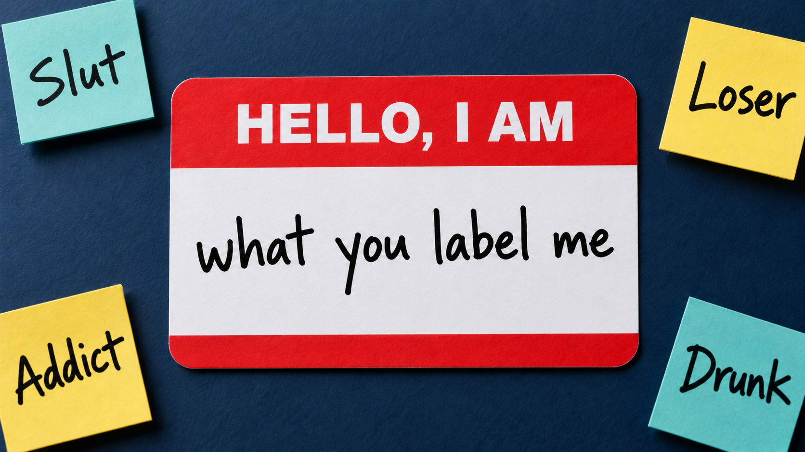

“Hello, I am what you label me”

The words are not interchangeable. Some are stigmatizing master statuses; others may open treatment, legal protection, community, or recovery resources. Labeling theory asks who applied the label, with what power, in which setting, and with what consequences.
Interactive: when primary deviance becomes secondary deviance
Select each stage. The sequence is possible rather than automatic, and the internalization stage is the crucial turning point.
The process can branch
Labels reorganize the past and the future
Retrospective labeling
After a label sticks, observers reinterpret earlier events as evidence that the person “was always this way.” An old party, absence, mistake, or prescription may acquire a new meaning.
Present master status
The label becomes the first fact others notice. Being “an alcoholic” can overshadow roles such as parent, employee, neighbor, student, veteran, or friend.
Prospective labeling
Observers use the label to predict future conduct. They may expect relapse, dishonesty, unreliability, or danger before the person acts, affecting surveillance and opportunity.
Interactive alcohol example: change the labeling lens
“Alcoholic” is used here because it is the requested historical labeling example. In health writing, person-first terms such as “person with alcohol use disorder” reduce the risk of turning a diagnosis into a total identity.
When an outsider’s label does not become the self
J. Mark Watson’s outlaw-motorcyclist studies
Watson examined how one-percent motorcycle clubs expressed lower-class cultural concerns and developed a distinct value system. Appearance that outsiders read as dirty, mean, frightening, or deviant could communicate authenticity, toughness, brotherhood, freedom, and status inside the group.
Labeling has less power to produce shame when the labeled person rejects the audience’s authority and receives a valued counter-definition from an intimate group. An “outlaw” label may even become a badge of honor.
Sykes and Matza: techniques of neutralization
Sykes and Matza argued that many people who deviate still share conventional values. Before or after an act, they may temporarily neutralize the moral rule that would otherwise restrain them. The technique excuses the behavior without requiring a fully oppositional value system.
| Technique | Logic | Drug/alcohol example | Critical question |
|---|---|---|---|
| Denial of responsibility | Agency is minimized: circumstances, pressure, biology, or other people supposedly made the act unavoidable. | “Everyone kept buying rounds; I had no choice but to drive.” | Which choices, constraints, and alternatives actually existed? |
| Denial of injury | The act is redefined as harmless because no obvious or immediate damage is recognized. | “Selling pills to friends does not hurt anyone because they wanted them.” | Are delayed, cumulative, indirect, or probabilistic harms being ignored? |
| Denial of the victim | The affected person is portrayed as deserving the outcome or as no legitimate victim. | “The dealer cheated people, so stealing the drugs was justified.” | Does disapproval of the person erase their right not to be harmed? |
| Condemnation of the condemners | Attention shifts from the act to hypocrisy, bias, corruption, or misconduct by those criticizing it. | “Politicians drink, so they have no right to punish cannabis use.” | Even if the critic is inconsistent, what evidence addresses the act itself? |
| Appeal to higher loyalties | A rule is violated to meet an obligation to a friend, family, crew, identity, or cause. | “I held the drugs because protecting my friend mattered more than the law.” | Which loyalty was prioritized, and who bears the resulting risk? |
Using labeling and neutralization in the research paper
Trace the audience and power
Who defined the behavior, and could that audience affect school, work, housing, treatment, family, or legal status?
Separate act from reaction
Identify primary deviance before analyzing the label and its later consequences.
Prove internalization
Do not assume it. Look for identity language, role loss, changed associations, or behavior organized around the label.
Identify exact neutralization
Quote or paraphrase the justification and explain which moral restraint it suspends.
References
- Becker, H. S. (1963). Outsiders.
- Faupel, C. E., Weaver, G. S., & Corzine, J. (2014). The sociology of American drug use (3rd ed.). Oxford University Press.
- Hodgson, C. (2026). Labeling, identity, and neutralization. Beyond the Substance: Understanding Drugs in Culture & Society. https://soc245-what-is-a-drug.carollhodgson.chatgpt.site/topics/labeling-neutralization.html
- Lemert, E. M. (1951). Social Pathology.
- Overview of outlaw motorcycle clubs citing Watson’s studies
- Sykes & Matza (1957), “Techniques of Neutralization”
- Watson, J. M. (1980). “Outlaw Motorcyclists: An Outgrowth of Lower Class Cultural Concerns.” Deviant Behavior, 2(1).
- Watson, J. M. (1982). “Righteousness on Two Wheels.” Sociological Spectrum, 2(4), 333–349.